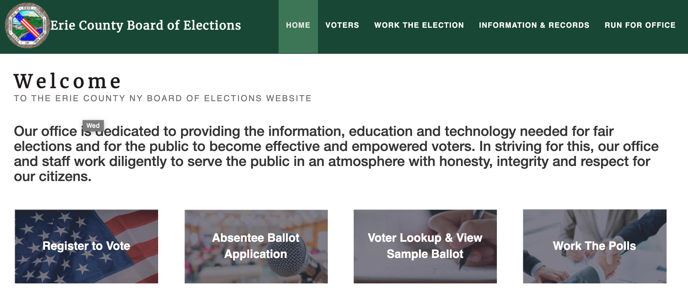

As a designer in the startup space, I'm used to being one-stop shopping for UI, UX, and product marketing. I design for the big picture and see the product in context, whether that means adjusting design strategy to appeal to a prospective customer base, staying careful with content, or doing a deep dive on user research. My background in public policy helps me balance stakeholder needs to create products designed for the long haul.
Making Voting Accessible
 My first job in government tech was product managing a county election commission website. Not only did we overhaul database elements, allowing voters to look up their ballots, register, see their elected officials, and even route to their polling places with Google Maps integration, but the project combined 3 websites from multiple CMS services into one in-house (mobile compatible!) product.
My first job in government tech was product managing a county election commission website. Not only did we overhaul database elements, allowing voters to look up their ballots, register, see their elected officials, and even route to their polling places with Google Maps integration, but the project combined 3 websites from multiple CMS services into one in-house (mobile compatible!) product.
The project and my skills at the time were pretty exclusively web development based, so this case study was an effort to expand accessibility through design.
Fostering Trust in Digital Contact Tracing

In 2020 I served as the founding product and design lead for PathCheck, a nonprofit spun out of MIT focused on developing privacy-preserving contact tracing solutions for the COVID-19 pandemic.We developed web and mobile applications for use by individuals, governments, and public health officials, and our open-source solution has been deployed in Minnesota, Hawaii, Alabama, Guam, Puerto Rico, Cyprus, and Wyoming, in addition to being used at a number of US universities.
Making Speech Accessible with Artificial Intelligence

My latest work is with an early-stage SaaS startup called Parrots, Inc. At Parrots, I get to use my design skills to help fine tune an artificial intelligence-powered robotics solution to help those with paraplegia speak to caretakers and loved ones. Our solution was featured on the Today Show, was a top pick in the biotech category at Tech Crunch, and is currently in testing at a number of hospitals and care facilities around the country.
Defining a Brand
Dwelling is a home management system seeking to simplify repairs and home improvement. In addition to helping with the initial MVP's UI/UX strategy, I developed print and social media marketing assets design as well as other promotional materials. Visit the site here, and check out some of my design work below!
Making Voting Accessible
My first job in government tech was product managing a county election commission website. It's a classic case of forgetting to take "before" photos, but the facelift was real!
Operating in a local government IT setup meant there wasn't much time to focus on design, but this project taught me tons about woring with complex database integration, cyber security, and what it takes to combine a number of very different websites into a more user-friendly platform. Not only did we overhaul database elements, allowing voters to look up their ballots, register, see their elected officials, and even route to their polling places with Google Maps integration, but the project combined 3 websites from multiple CMS services into one in-house product. We also (finally) bootstrapped the site to be mobile compatible, welcoming it to the 21st century, and secured a grant to translate the material into Spanish for over 30,000 voters in Erie County.